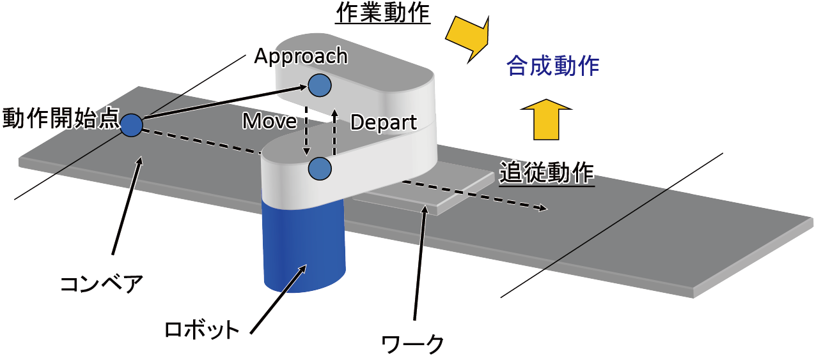
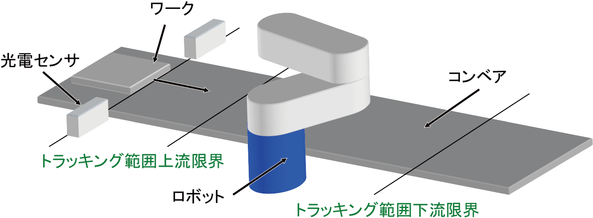
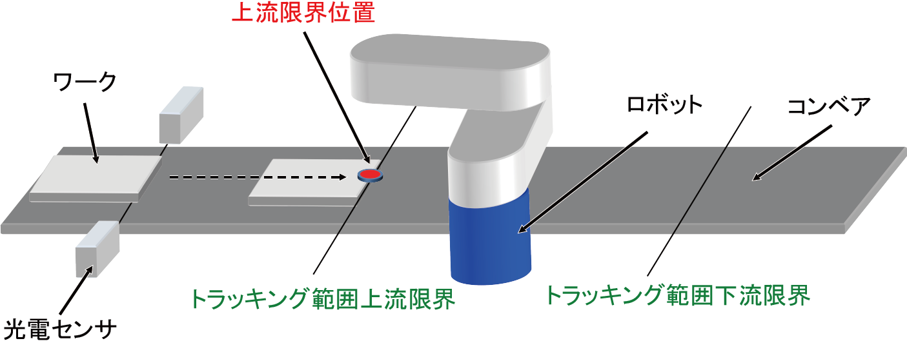
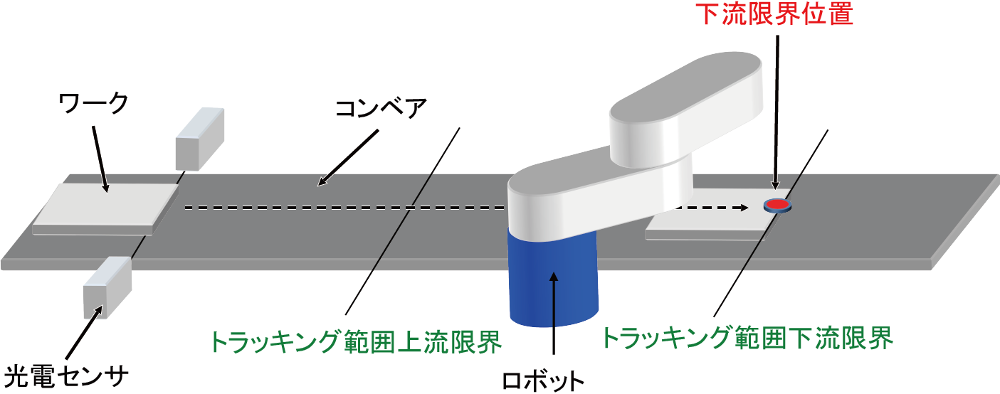
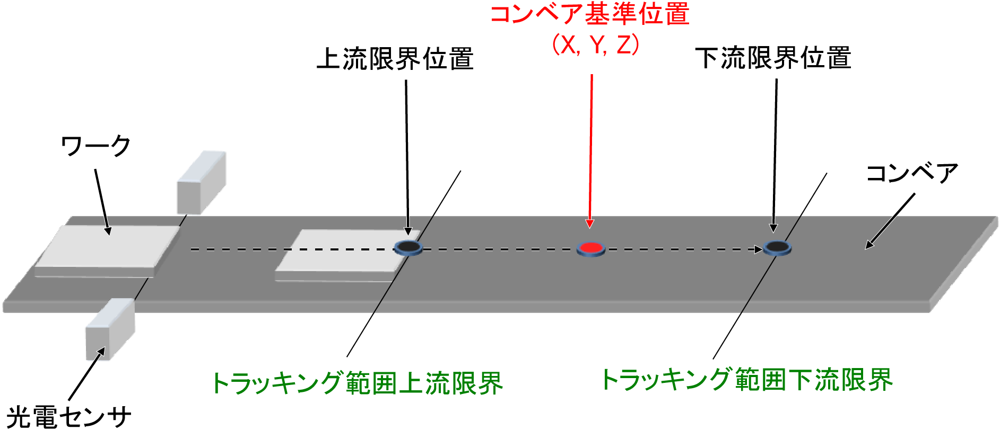
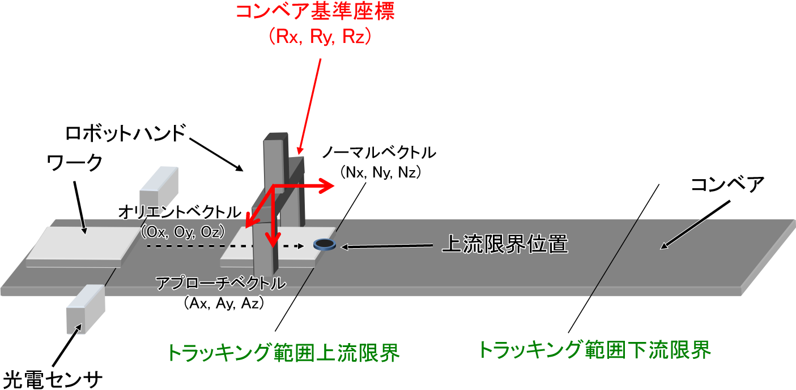
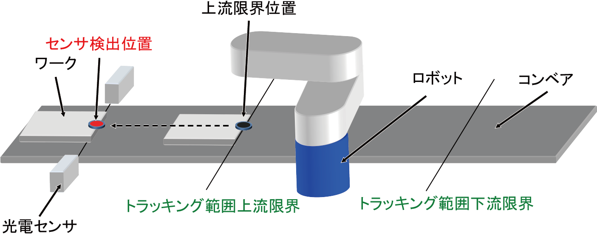
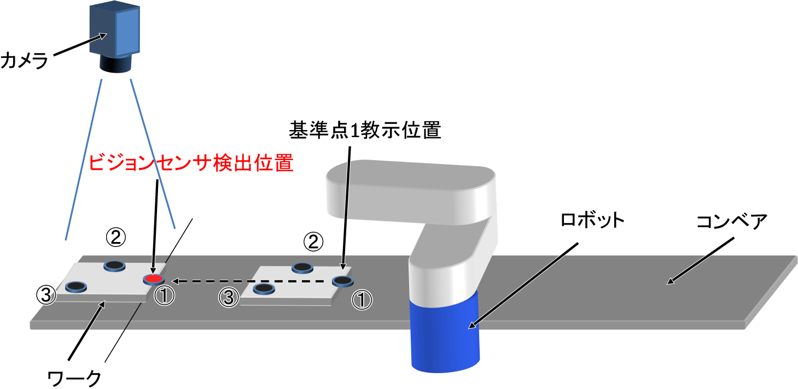
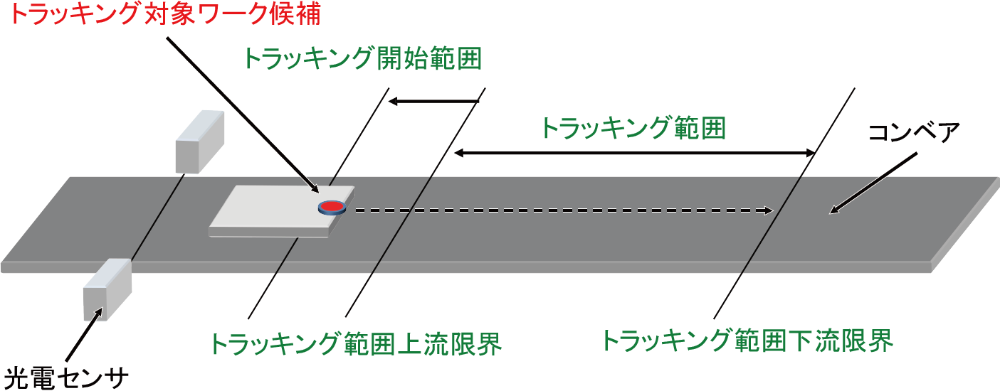

ID : 2221
用語と定義
- トラッキングモード
- コンベアトラッキングの機能が有効になっている状態を指します。
この状態の時に、専用動作コマンド（「TrackApproach」、「TrackDepart」、「TrackMove」、「TrackDraw」）を呼び出すことによって コンベアの移動によって動的に変化する目標位置に対してロボットを動作させることが可能になります。 - トラッキングモード中に排他制御、SS2、RSMによる減速を行うことはできません。
実行するとエラーで停止します。
なお、排他制御とコンベアトラッキングの同時使用はVer.2.8.*以降で可能です。
- 非トラッキングモード (通常動作モード)
- コンベアトラッキングの機能が無効になっている状態を指します。コントローラが起動した時の初期状態です。
動作コマンド（「Approach」、「Depart」、「Move」等）を使用して、静止した目標位置に対してロボットを動作させます。
この状態の時に、専用動作コマンド（「TrackApproach」、「TrackDepart」、「TrackMove」、「TrackDraw」）を呼び出すとエラーになります。
- コンベア追従動作 (追従動作)
- コンベア上のワークに追いつくためのロボット動作のことを指します。
コンベア上のワークと等速になるまで加速し、追いついた後はコンベアと並走します。
- 作業動作
- コンベアに追従する動き(追従動作)と同時に行う、ロボットが作業を行うための動作のことを指します。
例えば、「TrackApproach」動作は、コンベア追従動作と作業動作である「Approach」動作との合成動作になります。
- コンベアトラッキングバッファ (トラッキングバッファ)
- センサやビジョンセンサがワークを検出した際のワークに関するデータを保存しておくための記憶領域のことです。
1個のワークの登録で保存されるデータは、以下の通りです。
| 保存値 | |
|---|---|
| (1) | トラッキングバッファ内のインデックス値 (整数型データ) |
| (2) | ワーク検出時のコンベアのエンコーダ値 (整数型データ) |
| (3) | ビジョンセンサ検出座標 (バリアント(Variant)型データ配列) |
| センサ検出位置 (ポジション型データ) | |
| (4) | ユーザデータ (整数型データ) |
| (5) | 属性データ (整数型データ) |
- コンベアベクトル
- コンベアの進行方向を表す長さ1の3次元ベクトルです。ベース座標系からみた方向ベクトルです。
- トラッキング対象ワーク
- トラッキングバッファの中から取り出して、今まさにトラッキング動作に使おうとしているワークデータの事を指します。
「TrackInRange」や「TrackArrivalTime」などのコマンドの処理対象になります。
- トラッキング範囲
- ロボットが、コンベア追従動作を行うことができるコンベア上の範囲のことです。
ワークが運ばれてくる側（上流）にある上流限界と、運ばれていく側（下流）にある下流限界で制限されています。
複数台のロボットを使用する場合は、ロボット毎にトラッキング範囲を設定します。
- トラッキング範囲上流限界 (上流限界)
- ロボットがコンベア追従動作を開始することのできる上流側の位置です。
ロボットアームが届く位置である必要があります。
- トラッキング範囲下流限界 (下流限界)
- ロボットがコンベア追従動作をやめ減速を開始する下流側の位置です。
ロボットアームが届く位置である必要があります。
- トラッキング範囲上流限界位置 (上流限界位置)
- トラッキング範囲上流限界を指定するために、コンベアキャリブレーションの中で登録した位置です。
ベース座標系からみたロボットのフランジ中心の位置です。
- トラッキング範囲下流限界位置 (下流限界位置)
- トラッキング範囲下流限界を指定するために、コンベアキャリブレーションの中で登録した位置です。
ベース座標系からみたロボットのフランジ中心の位置です。
- コンベア基準位置
- トラッキング範囲上流限界位置とトラッキング範囲下流限界位置の中点位置(X, Y, Z)のことを指します。
トラッキング範囲上流限界および、トラッキング範囲下流限界が変更されると、それに伴いこの位置も更新されます。
ベース座標系からみたロボットのフランジ中心の位置です。
- ワーク把持基本姿勢
- コンベアトラッキング動作時にワークを掴みに行くポジション型の姿勢(Rx, Ry, Rz)のことを指します。
トラッキング範囲上流限界位置の教示時に登録されます。
- キャリブレーション
- RC8シリーズのコンベアトラッキングにおいては、コンベア、センサ(ビジョンセンサ)、ロボットに関して、それぞれの正確な位置関係を計測することを指します。具体的には、コンベアキャリブレーション、センサキャリブレーション（センサトラッキング時）、カメラキャリブレーション（ビジョントラッキング時）を行うことを指します。
- コンベアキャリブレーション
- RC8シリーズのコンベアトラッキングにおいては、コンベアとロボットに関して、それぞれの正確な位置関係を計測することを指します。具体的には、下記のパラメータを計測することを指します。
| パラメータの名称 | 内容 |
|---|---|
| コンベアCALDATA値X, Y | コンベアの進行方向を示すベース座標Z軸回りの回転角度[rad] |
| コンベアCALDATA値Z | コンベアの進行方向を示すベース座標XY平面から見た傾き[rad] |
| コンベア送り量 | エンコーダ1回転あたりのコンベアの進み量[mm/rev] |
| エンコーダ回転方向 | コンベアを上流から下流に送った際のエンコーダの回転方向(1：正転、-1：逆転) |
| パラメータの名称 | 内容 |
|---|---|
| トラッキング範囲上流限界 | ロボットがコンベア追従動作を開始することのできる上流側の位置[mm] |
| トラッキング範囲下流限界 | ロボットがコンベア追従動作をやめ減速を開始する下流側の位置[mm] |
| パラメータの名称 | 内容 |
|---|---|
| コンベア基準座標X | 上流限界位置と下流限界位置の中点位置X[mm] |
| コンベア基準座標Y | 上流限界位置と下流限界位置の中点位置Y[mm] |
| コンベア基準座標Z | 上流限界位置と下流限界位置の中点位置Z[mm] |
- センサキャリブレーション
- RC8シリーズのコンベアトラッキングにおいては、センサとロボットに関して、それぞれの正確な位置関係を計測することを指します。具体的には、下記のパラメータを計測することを指します。
-
Ver.1.11.*以前とVer.1.12.*以降で、キャリブレーションを行った際に格納されるフォーマットが異なります。 また、Ver.1.11.*以前では、センサトラッキングとビジョントラッキングでも格納されるフォーマットが異なります。 Ver.1.12.*以降で行ったキャリブレーションの結果は、Ver.1.11.*以前のコントローラでは使用できません。
| パラメータの名称 | 内容(Ver.1.11.*以前) | 内容(Ver.1.12.*以降) |
|---|---|---|
| CALDATA値（00） | センサ検出位置X[mm] | 同次変換型ワーク把持基本姿勢のNx |
| CALDATA値（01） | センサ検出位置Y[mm] | 同次変換型ワーク把持基本姿勢のOx |
| CALDATA値（02） | センサ検出位置Z[mm] | 同次変換型ワーク把持基本姿勢のAx |
| CALDATA値（03） | 同次変換型ワーク把持基本姿勢のOx | センサ検出位置X[mm] |
| CALDATA値（10） | 同次変換型ワーク把持基本姿勢のOy | 同次変換型ワーク把持基本姿勢のNy |
| CALDATA値（11） | 同次変換型ワーク把持基本姿勢のOz | 同次変換型ワーク把持基本姿勢のOy |
| CALDATA値（12） | 同次変換型ワーク把持基本姿勢のAx | 同次変換型ワーク把持基本姿勢のAy |
| CALDATA値（13） | 同次変換型ワーク把持基本姿勢のAy | センサ検出位置のY成分[mm] |
| CALDATA値（20） | 同次変換型ワーク把持基本姿勢のAz | 同次変換型ワーク把持基本姿勢のNz |
| CALDATA値（21） | 0 | 同次変換型ワーク把持基本姿勢のOz |
| CALDATA値（22） | 0 | 同次変換型ワーク把持基本姿勢のAz |
| CALDATA値（23） | 0 | センサ検出位置Z[mm] |
| パラメータの名称 | 内容 |
|---|---|
| コンベア基準座標RX | ワーク把持基本姿勢のRX[deg] |
| コンベア基準座標RY | ワーク把持基本姿勢のRY[deg] |
| コンベア基準座標RZ | ワーク把持基本姿勢のRZ[deg] |
- カメラパラメータ
- RC8シリーズのコンベアトラッキングにおいては、ビジョンセンサの画像座標を、ロボットのベース座標から見た位置に変換するためのパラメータを指します。具体的には、下記のパラメータのことを指します。
-
Ver.1.11.*以前とVer.1.12.*以降で、キャリブレーションを行った際に格納されるフォーマットが異なります。
また、Ver.1.11.*以前では、センサトラッキングとビジョントラッキングでも格納されるフォーマットが異なります。
Ver.1.12.*以降で行ったキャリブレーションの結果は、Ver.1.11.*以前のコントローラでは使用できません。
| パラメータの名称 | 内容(Ver.1.11.*以前) | 内容(Ver.1.12.*以降) |
|---|---|---|
| CALDATA値（00） | ビジョンセンサ検出位置X[mm] | 同次変換型のNx |
| CALDATA値（01） | ビジョンセンサ検出位置Y[mm] | 同次変換型のOx |
| CALDATA値（02） | ビジョンセンサ検出位置Z[mm] | 同次変換型のAx |
| CALDATA値（03） | 同次変換型のOx | ビジョンセンサ検出位置X[mm] |
| CALDATA値（10） | 同次変換型のOy | 同次変換型のNy |
| CALDATA値（11） | 同次変換型のOz | 同次変換型のOy |
| CALDATA値（12） | 同次変換型のAx | 同次変換型のAy |
| CALDATA値（13） | 同次変換型のAy | ビジョンセンサ検出位置Y[mm] |
| CALDATA値（20） | 同次変換型のAz | 同次変換型のNz |
| CALDATA値（21） | 0 | 同次変換型のOz |
| CALDATA値（22） | 0 | 同次変換型のAz |
| CALDATA値（23） | 0 | ビジョンセンサ検出位置Z[mm] |
- カメラキャリブレーション
- RC8シリーズのコンベアトラッキングにおいては、ビジョンセンサとロボットに関して、それぞれの正確な位置関係を計測することを指します。具体的には、カメラパラメータと下記のパラメータを計測することを指します。
| パラメータの名称 | 内容 |
|---|---|
| コンベア基準座標RX | ワーク把持基本姿勢のRX[deg] |
| コンベア基準座標RY | ワーク把持基本姿勢のRY[deg] |
| コンベア基準座標RZ | ワーク把持基本姿勢のRZ[deg] |
- センサ検出位置
- ラインセンサによって検出された瞬間のワークが、ロボットの座標系から見てどこに存在するかを指す位置(X, Y, Z)です。センサキャリブレーションの中で教示したトラッキング範囲上流限界位置を反コンベアベクトル方向に戻した位置です。
ベース座標系からみたロボットのフランジ中心の位置です。
- ゼロ点座標
- 画像座標上の基準点です。ビジョンセンサ検出位置を定義するために用いられます。Ver.2.0.*より前では、常に画像座標(0, 0)を指します。Ver.2.0.*以降では、カメラキャリブレーションを行う際に教示した3つの基準点の内、1点目の画像座標が設定されます。
- ビジョンセンサ検出位置
- ビジョンセンサによって検出された瞬間のゼロ点座標のワークが、ロボットの座標系から見てどこに存在するかを指す位置(X, Y, Z)です。ベース座標系からみたロボットのフランジ中心の位置です。

- ビジョンセンサ検出座標
- ビジョンセンサでワークを検出した際の、画像座標 (x, y) [pixel] とワークの姿勢角度θ [deg]のことです。
(x、y、θ) の順に格納された、3要素のバリアント(Variant)型データ配列で表現します。それぞれの要素は、単精度実数型データで表現します。
- トラッキング開始範囲
- トラッキング範囲上流限界を上流側に一定量オフセットした位置です。
トラッキングバッファの中で、この位置より下流にあるワークデータは、トラッキング対象ワークの候補になります。
ロボットが待機位置からトラッキング範囲上流限界まで移動する間にトラッキング範囲に運ばれてくるワークも、トラッキング対象に設定できるようにするため、この範囲が設けられています。
ID : 2221